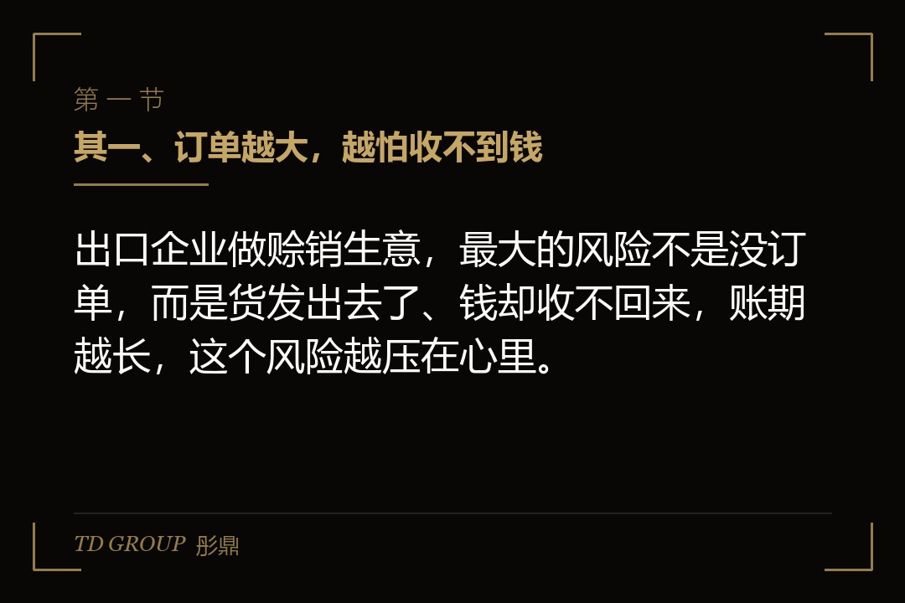
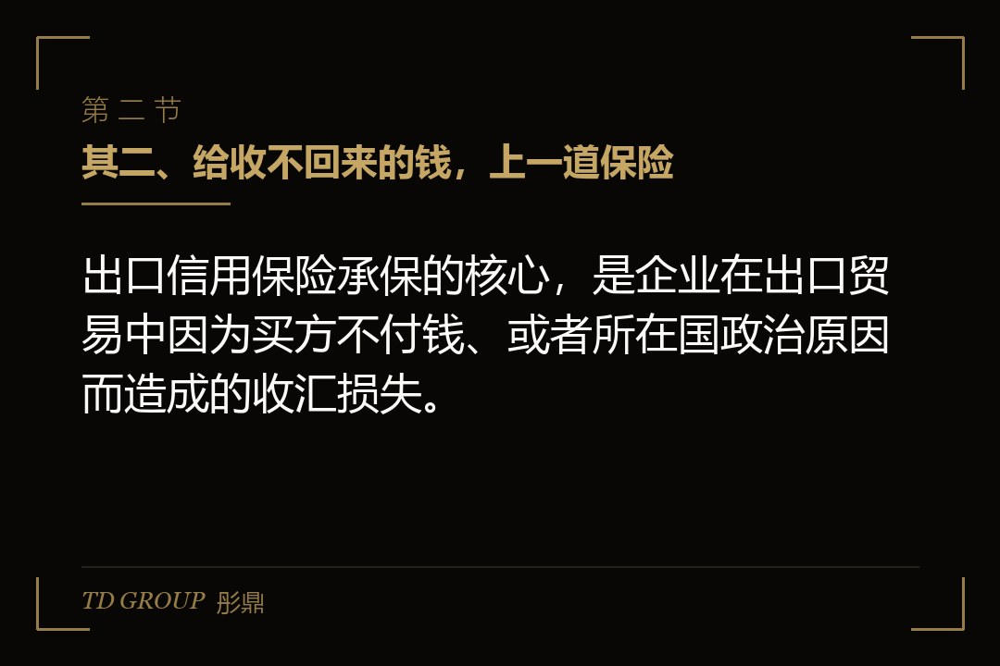
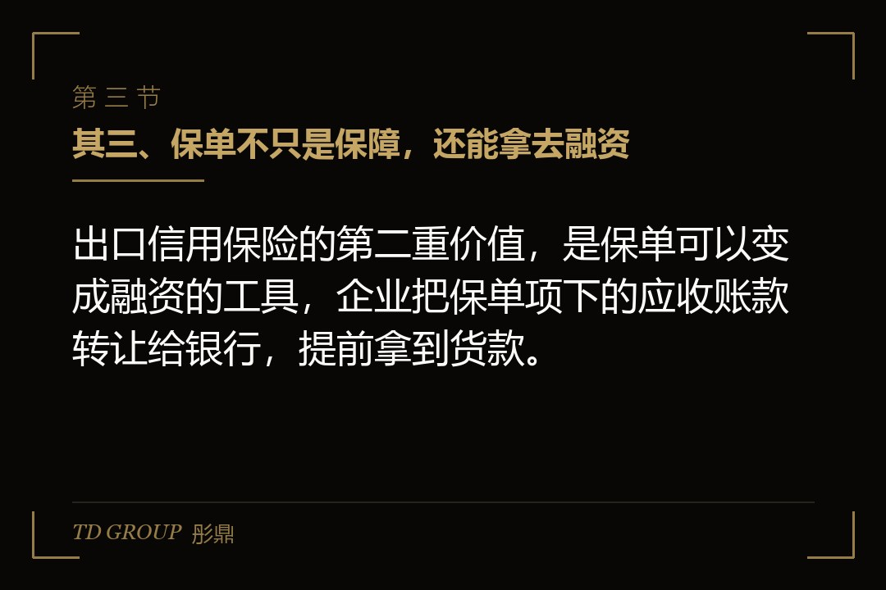

其一、订单越大，越怕收不到钱

结论先行：出口企业做赊销生意，最大的风险不是没订单，而是货发出去了、钱却收不回来，账期越长，这个风险越压在心里。
假设有家做机电产品出口的企业，海外订单一年比一年多，客户从几十家扩到上百家。生意大了，客户的要求也跟着变：账期从原来的三十天，一点点拉到六十天、九十天，甚至有客户要求赊销，先发货、后付款。
它心里清楚，每一笔赊销都是一次赌博。对方是海外公司，隔着重洋，真要是拖欠或者破产，它追债的成本高得吓人，往往最后只能认亏。可要是不接赊销的订单，生意就没了，因为同行都愿意赊，你不赊，客户转头就去找别人。
它也想过自己管控，把客户的资信一家家查过去。但海外客户的工商、财务信息不像国内这么透明，查起来费时费力，而且客户遍布几十个国家，一家家查根本查不过来。手里没有可靠的工具，就只能凭经验和运气硬扛。
这就是出口企业最普遍的处境：单子越大，敞口越大，压在应收账款上的风险越重，而企业自己几乎没有手段去对冲这个看不见的风险。
其二、给收不回来的钱，上一道保险

结论先行：出口信用保险承保的核心，是企业在出口贸易中因为买方不付钱、或者所在国政治原因而造成的收汇损失。
打个比方，这就像给应收账款上一道保险。你正常发货、正常开票，如果买家到期不付、或者干脆破产了，保险机构会按约定赔你一部分损失，而不是让你自己一个人扛下全部。它保的不是「一定能拿到钱」，而是「收不到的时候，有人和你一起分担」。
它承保的风险主要有两类。一类是商业风险，也就是买方那边出了问题：拖欠、拒收、破产、无力付款，这些是出口企业最常遇到、也最防不胜防的；另一类是政治风险，也就是买方所在国那边出了问题：外汇管制、进口限制、战争、动乱，导致钱汇不出来。这两类风险，都是企业自己靠催收解决不了的，也正是保险能真正起作用的地方。
有了这道保险，企业手里的应收账款就从「可能收不回来」变成了「有保障的回款」，账也敢赊了，单也敢接了，不必再为了一单生意把心悬上九十天。
还有一个附带的好处，是保险机构会替企业做一道客户信用把关。投保的时候，保险机构通常会对买方做资信调查、给一个信用额度，超出额度的部分就不承保。这等于企业免费得到了一套海外客户的信用评估，哪些客户能赊、赊多少，有了一个外部的参照。对于自己没能力查海外资信的中小出口企业来说，这道把关本身就有价值，甚至比赔付更有用。
其三、保单不只是保障，还能拿去融资

结论先行：出口信用保险的第二重价值，是保单可以变成融资的工具，企业把保单项下的应收账款转让给银行，提前拿到货款。
这是很多人没想到的一层。保险保的是回款，而一份有效的保单，实际上给那笔应收账款做了一次增信。银行看到有保险兜底，愿意以更宽松的条件给企业放款，甚至专门做一种叫保单融资的业务。
操作上，通常是企业投保后，把保单项下的应收账款权益转让给银行，银行据此给企业放一笔款，等海外客户到期付款后，钱直接进银行的指定账户，用来偿还这笔融资。这样企业就不用等到九十天账期结束，而是发货后就能拿到大部分货款。
所以出口信用保险的价值是双重的：它既直接保了回款，又间接提升了企业的融资能力。对资金紧张、又依赖赊销做出口的企业来说，后一重价值甚至比前一重更重要，因为它解决的不是「万一收不到」，而是「眼下就要用钱」这个更急的问题，能让企业在发货之后马上把资金转起来，而不是被账期死死压住。
其四、赔付不是出了事就全额赔
结论先行：出口信用保险的赔付有比例、有等待期、有除外责任，不是一发生损失就立刻全额赔，投保前要把这些细节看清楚。
头一个要明白的是赔付比例。多数保单不会全额赔付，而是约定一个赔付比例，比如八成、九成，剩下的一两成要企业自己承担。这么做是为了让企业自己也对客户信用上点心，而不是有了保险就随便赊账。所以即便有保险，赊销的客户信用管理仍然不能松。
第二个是等待期。从买方违约到保险机构开始赔付，中间有一个约定的等待期，往往是几个月。这几个月里企业要配合做催收、提交材料、走核赔流程，钱不会立刻到账，企业要自己先把这个空档的资金安排好，别把赔款当成随时能到手的现金。
第三个是除外责任。有些情况保险是不赔的，比如企业自己违反合同、关联交易、或者没有按规定申报。投保前一定要把这些除外条款读清楚，别等到出了事才发现这一单根本不在承保范围里。
这三条叠在一起，意味着出口信用保险给的不是「零损失」，而是「把损失压到一个可以承受的比例」。企业自己仍然要承担一部分风险，仍然要做客户管理，只是不用一个人扛全部。理解这一点，才不会对保险有不切实际的期待。
其五、保单融资，同样有边界
结论先行：保单融资不是无条件放款，它的额度、比例和条件，取决于保单质量、买方信用和银行的口径，做之前同样要看清楚。
保单融资放多少钱，通常和保单的承保比例、买方的信用等级、账期的长短都有关系。银行会评估这笔应收账款的真实性和可收回性，再决定放多少、按什么价格放。不是有张保单，银行就照单全收，它仍然要核一遍单据、核一遍买方、核一遍企业的履约情况，只是因为有保险兜底，条件会比纯信用放款宽松一些。
还有一个要留意的地方，是融资的还款来源绑定在应收账款上。如果海外客户到期不付，银行会先走保险理赔，理赔款用来偿还融资；如果理赔有缺口，或者出了除外责任，那这个缺口最终还是要企业自己补上。所以保单融资降低了风险，但没有把风险清零，它只是把风险从「全额自担」降到了「自担那一小部分加时间成本」。
企业做之前，要把银行给的融资条件和保单的赔付条件放在一起看，算清楚最坏情况下自己要兜多少底，别只盯着放款时到手的那笔钱。
其六、做之前先核清四件事
结论先行：要不要投保、要不要拿保单融资，先把客户风险、承保范围、赔付细节和融资条件这四件事核清，再动手。
其一，客户风险到底有多大。把海外客户的信用状况、所在国的政治和外汇环境梳理一遍，判断自己真正的敞口在哪、有多大，值不值得为它买保险，这决定了你是要全保、只保一部分，还是干脆放弃这一单。
其二，承保范围对不对得上。看清楚保单保的是商业风险还是政治风险、承保比例多少、有没有你真正担心的那类风险，别买了一份跟你风险不对口的保险。
其三，赔付细节清不清楚。赔付比例、等待期、除外责任，这些直接决定真出了事你能拿回多少、多久能拿到，逐条读明白。
其四，融资条件划不划算。把保单融资的额度、价格、还款安排，和普通贸易融资、押汇这些替代方案放在一起比，看哪条更省、更稳。
这四件事想清楚，出口信用保险才是一个既保回款、又能撬动融资的好工具；没想清楚就投保、就融资，它可能只是让你在账期和赔付的空档里，多背了一道自己没算清的负担，最后发现保了险却还是被资金链卡住。
本文为知识梳理，不构成专业意见。出口信用保险的承保范围、赔付比例、等待期与除外责任，以及保单融资的额度、价格与还款条件，均以正式保单、融资协议及保险机构与银行的实际口径为准。